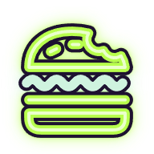
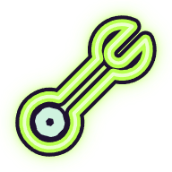
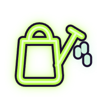
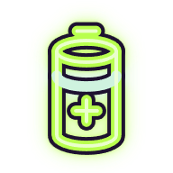
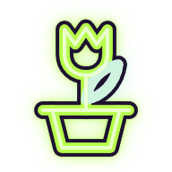
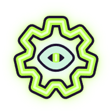

<link rel="preconnect" href="https://fonts.googleapis.com">
<link rel="preconnect" href="https://fonts.gstatic.com" crossorigin>
<link rel="stylesheet" href="https://fonts.googleapis.com/css2?family=Nunito:wght@700;800;900&display=swap">
<!-- "Неон": the third item icon treatment. Six item pictures drawn as glowing line glyphs (own work, the SVGs beside the
     PNGs in icons/), the acid green line of the glowing buttons plus one mint detail, an ink keyline so they still read
     on the light sticker plate. The glow is baked into the 192 px PNGs (an SVG blur under the line): in Godot they are
     plain textures, so the UI CSS here stays Godot-safe (solid fills, one-colour borders, radii, one hard shadow without
     spread). The slots are the current sticker item bar (pages/mvp-screens, "Панель предметів", A); the room behind
     them is a stand-in for the 3D world, not UI. -->
<section class="sgn" id="icons-neon">
<style>
.sgn { --sgn-pu: #2B1846; --sgn-pud: #1F1033; --sgn-ink: #1E1230; --sgn-mint: #CFF3DF; --sgn-gr: #A6E85A; --sgn-mu: #B7A8D6;
  --sgn-ow: 4px; --sgn-sh: 5px; --sgn-ft: "Nunito", "Segoe UI", sans-serif;
  display: grid; gap: 14px; padding: 16px; border-radius: 12px; background: var(--sgn-pud); color: var(--sgn-mint); font-family: var(--sgn-ft); }
.sgn h2 { margin: 0; font: 900 22px/1.2 var(--sgn-ft); }
.sgn p { margin: 0; font: 700 14px/1.45 var(--sgn-ft); color: var(--sgn-mu); max-width: 70ch; }
.sgn h3 { margin: 4px 0 0; font: 800 15px/1.2 var(--sgn-ft); }
.sgn-big { display: flex; flex-wrap: wrap; gap: 10px; }
.sgn-cell { width: 140px; display: grid; justify-items: center; gap: 6px; font: 700 12px/1.25 var(--sgn-ft); color: var(--sgn-mu); text-align: center; }
.sgn-cell span { display: grid; place-items: center; width: 140px; height: 140px; border-radius: 12px; background: var(--sgn-pu); }
.sgn-cell :is(img, svg) { display: block; width: 128px; height: 128px; }
.sgn-room { position: relative; overflow: hidden; border-radius: 12px; background: #9C8670; padding: 26px 18px 26px; }
.sgn-room i { position: absolute; left: 0; right: 0; bottom: 0; height: 38%; background: #85593A; display: block; }
.sgn-row { position: relative; display: flex; flex-wrap: wrap; align-items: flex-end; gap: 22px 16px; }
.sgn-sl { position: relative; width: 84px; height: 84px; box-sizing: border-box; display: grid; place-items: center;
  background: var(--sgn-mint); border: var(--sgn-ow) solid var(--sgn-ink); border-radius: 16px; box-shadow: var(--sgn-sh) var(--sgn-sh) 0 var(--sgn-ink); }
.sgn-sl :is(img, svg) { display: block; width: 60px; height: 60px; }
.sgn-sl.sgn-on { width: 100px; height: 100px; background: var(--sgn-gr); }
.sgn-sl.sgn-on :is(img, svg) { width: 74px; height: 74px; }
.sgn .sgn-critic { padding: 8px 10px; border: 1px solid #54457A; border-radius: 8px; color: var(--sgn-mint); }
</style>
<h2>Іконки предметів: неон</h2>
<p>Третя манера: предмет намальований світною лінією, як на екрані інопланетної техніки. Кислотно-зелена лінія, як у кнопок, що світяться, одна м’ятна деталь і тонкий чорнильний контур, щоб іконку було видно й на світлій наліпці. Світіння вже в картинці, тож у грі це звичайна текстура.</p>
<h3>Великі, 128 px</h3>
<div class="sgn-big">
  <div class="sgn-cell"><span></span>Бургер</div>
  <div class="sgn-cell"><span></span>Гайковий ключ</div>
  <div class="sgn-cell"><span></span>Лійка</div>
  <div class="sgn-cell"><span></span>Батарейка</div>
  <div class="sgn-cell"><span></span>Тюльпан у горщику</div>
  <div class="sgn-cell"><span></span>Друкована деталь двигуна</div>
</div>
<h3>У слоті-наліпці над кімнатою: рука (зелена, 100 px) і пояс (м’ятний, 84 px)</h3>
<div class="sgn-room">
  <i aria-hidden="true"></i>
  <div class="sgn-row">
    <div class="sgn-sl sgn-on"></div>
    <div class="sgn-sl"></div>
    <div class="sgn-sl"></div>
    <div class="sgn-sl"></div>
    <div class="sgn-sl"></div>
    <div class="sgn-sl"></div>
  </div>
  <div class="sgn-row" style="margin-top:24px">
    <div class="sgn-sl sgn-on"></div>
    <div class="sgn-sl sgn-on"></div>
    <div class="sgn-sl sgn-on"></div>
    <div class="sgn-sl sgn-on"></div>
    <div class="sgn-sl sgn-on"></div>
  </div>
</div>
<p class="sgn-critic"><b>Критик:</b> чесна власна робота, але лінійні гліфи виглядають як типовий набір контурних іконок; на м'ятному й зеленому слоті світіння зникає, а лійка, тюльпан і шестерня з оком на розмірі слота читаються не тим. Світити має слот, а не картинка.</p>
</section>
